개념 12개 가운데 12개를 실험 페이지로 만들었어요. 순서대로 보면 단원의 흐름이 이어져요.
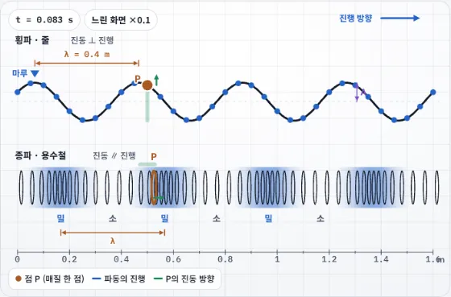
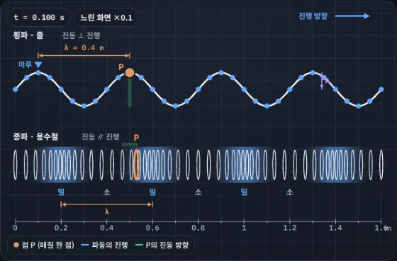
III1-01 파동의 기본 요소: 횡파와 종파 매질은 제자리에서 흔들리기만 하는데, 앞으로 나아가는 것은 무엇일까?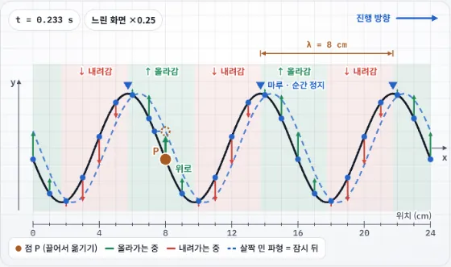
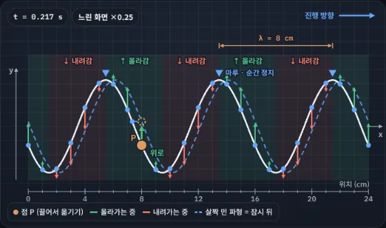
III1-02원리 애니메이션 파동 그래프 두 가지와 진행 방향 판단 같은 사인 곡선인데 왜 한 그래프에서는 파장이, 다른 그래프에서는 주기가 읽힐까?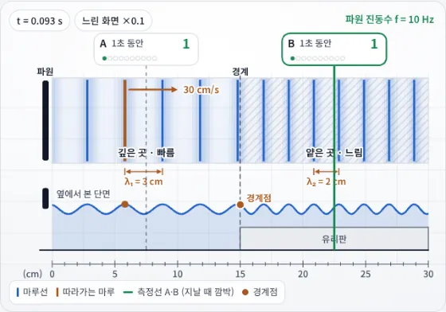
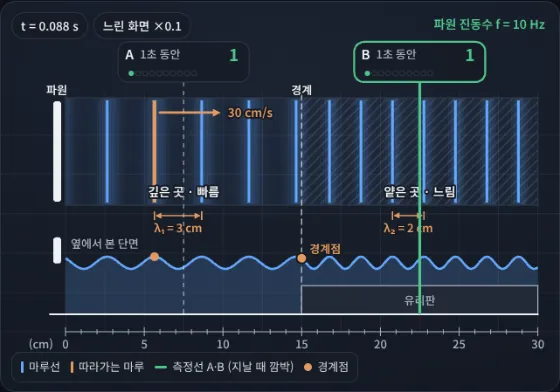
III1-03 매질이 바뀔 때: 진동수 불변, 속력과 파장 변화 파동이 다른 매질로 넘어가면 무엇이 그대로이고 무엇이 바뀔까?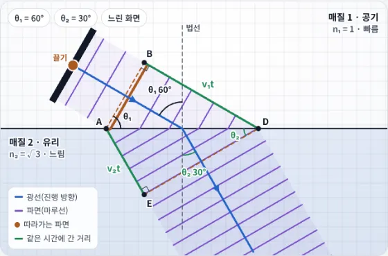
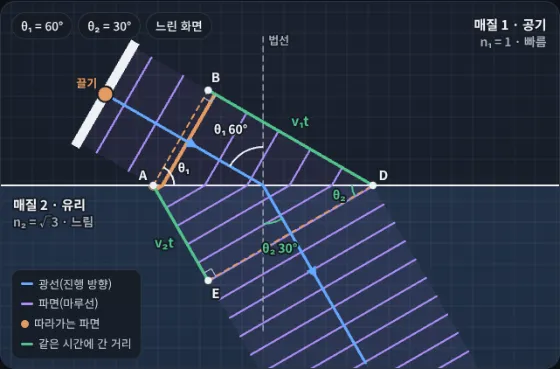
III1-04 굴절과 스넬 법칙 파동은 왜 경계에서 꺾이고, 얼마나 꺾일지는 무엇이 정할까?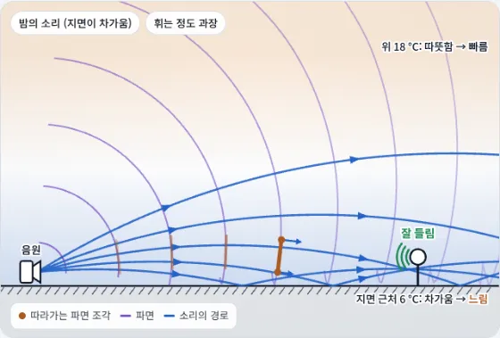
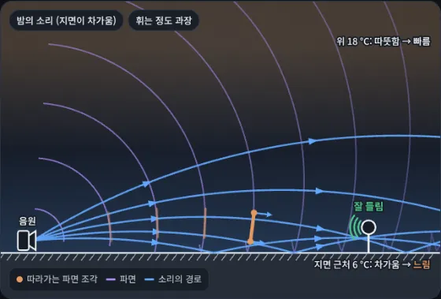
III1-05원리 애니메이션 생활 속 굴절 현상 신기루, 밤에 잘 들리는 소리, 얕아 보이는 물은 모두 같은 원리일까?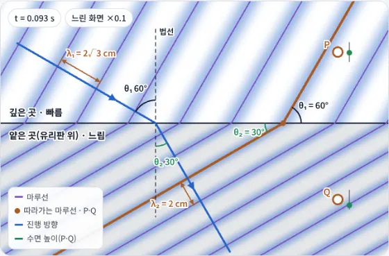
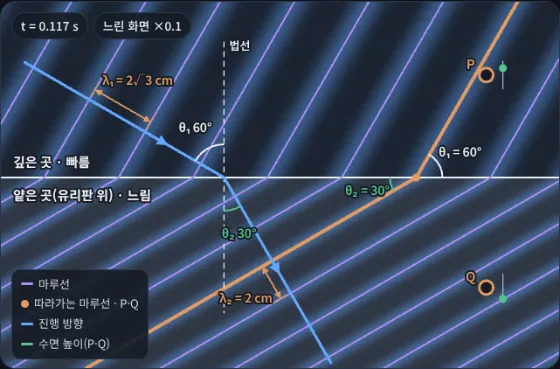
III1-06 여러 매질의 굴절과 물결파 굴절 매질이 세 개 이상이거나 그래프로 주어지면 굴절률 순서를 어떻게 정할까?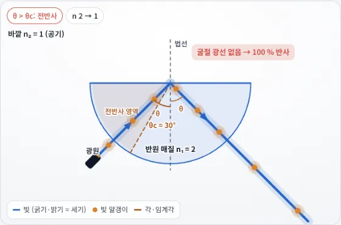
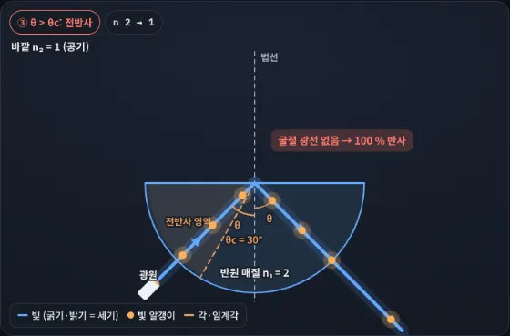
III1-07 전반사, 광섬유와 광통신 빛이 경계를 빠져나가지 못하고 전부 되돌아오는 조건은 무엇일까?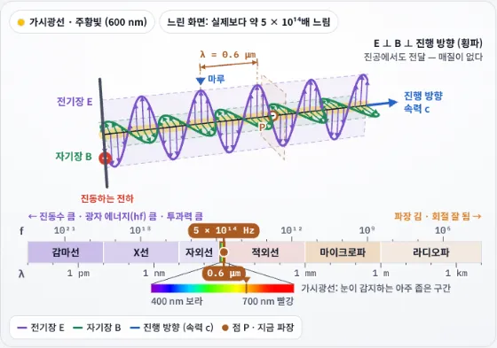
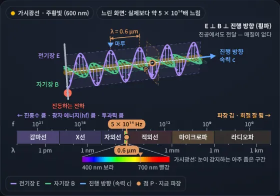
III1-08 전자기파의 본질과 스펙트럼 전자기파는 무엇이 진동하는 파동이고, 종류는 무엇으로 나뉠까?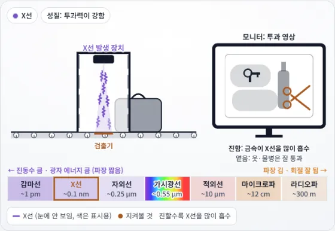
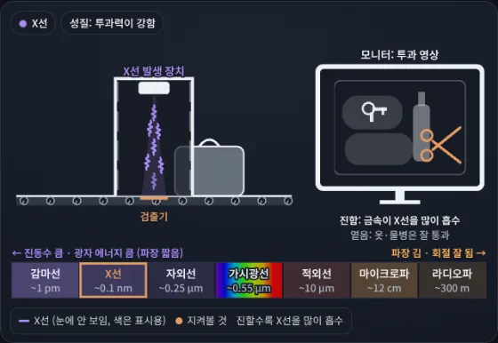
III1-09원리 애니메이션 전자기파의 이용 각 전자기파는 어떤 성질 때문에 그 용도에 쓰일까?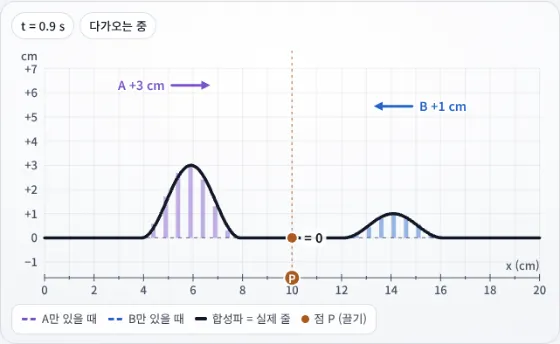
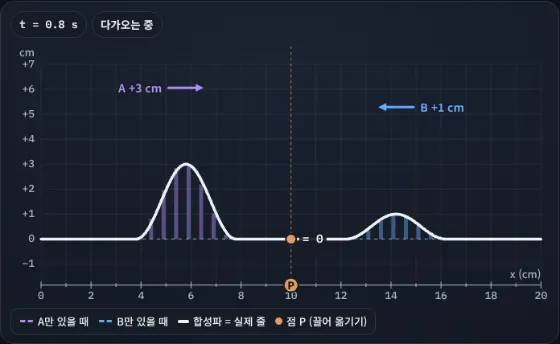
III1-10원리 애니메이션 중첩 원리와 마주 진행하는 두 파동 두 파동이 만나면 어떻게 합쳐지고, 지나간 뒤에는 어떻게 될까?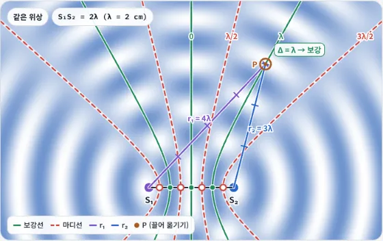
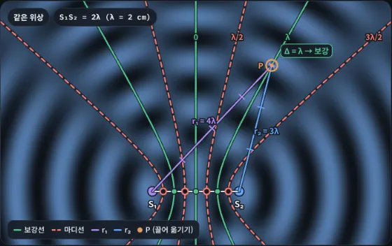
III1-11 물결파·소리의 간섭: 경로차 조건 두 파원에서 나온 파동이 만날 때 어디는 크게 출렁이고 어디는 잠잠할까?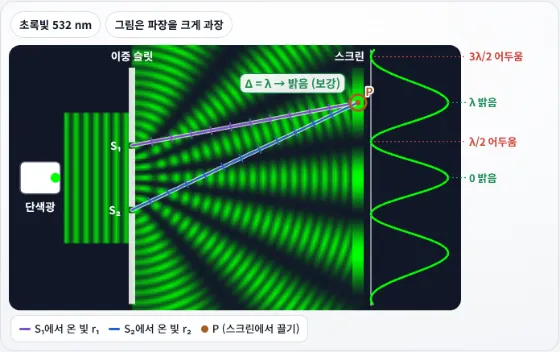
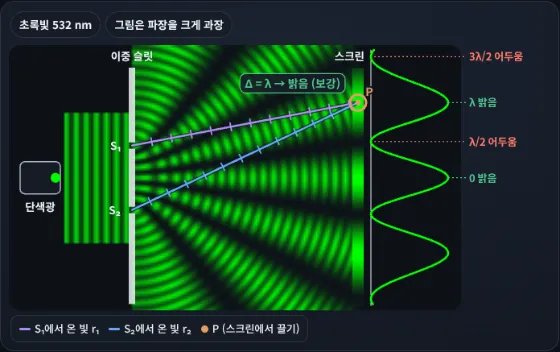
III1-12원리 애니메이션 빛의 간섭과 간섭의 이용 빛도 간섭한다는 것은 무엇으로 확인하고, 간섭은 어디에 쓰일까?